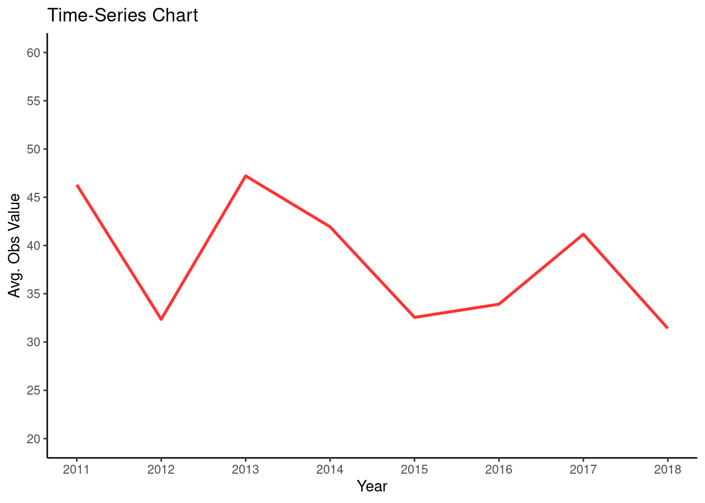
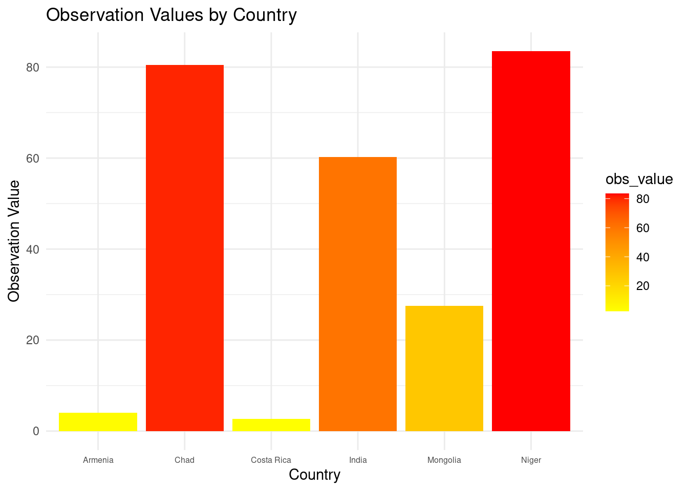
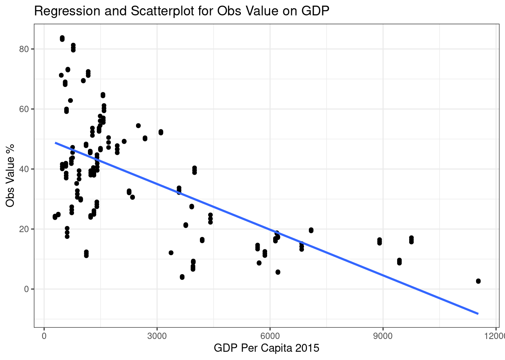
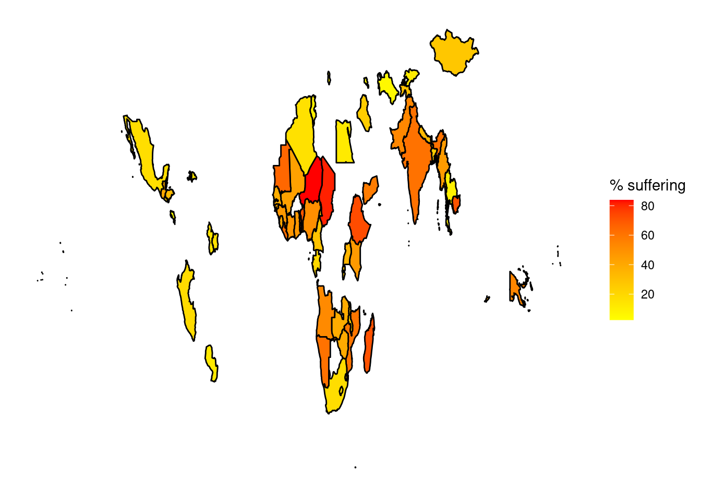

Child Poverty. Homogeneous severe standards.
Abstract
The measurements of child poverty can include: adequate access to nutrition, safe drinking water, sanitation, housing and education. As of 2023, about 1 billion children are living in poverty or can be considered multidimensionally poor- having no access to education, health, housing, nutrition, sanitation or water (Unicef, 2023). A child can be considered poor when at least one of their basic rights is not met, or when he/she experience at least one basic deprivation (Unicef, 2007). Of course, multiple deprivations can occur simultaneously, and an estimated 356 million children live in extreme poverty and are forced to survive on less than $1.90 a day (Unicef, 2023). For the case of this study, we will be analysing countries in which children suffer at least one deprivation. Reducing poverty and eradicating it has been a challenge to all nations. Understanding its characteristics and the demographic statistics can help to identify, analyse, and evaluate conditions which can help to understand the problem more.
Poverty Over Time
The data in this study is taken from the period 2011 to 2018. For each year, the average obs. value for the countries in that year is taken. The results show that in 2011 and 2013, both years have the highest average obs. values as only 4 countries were recorded in 2011 and 5 in 2013. In 2012 and 2018, both years have the lowest average obs. values. This is strange, in 2012, as only 6 countries were recorded in comparison to 14 countries in 2018. 2014 had the highest amount of countries recorded (15). In terms of tackling poverty there is no way of evaluating if it has improved or worsened between 2011 and 2018.

Countries and Poverty
Sub-Saharan Africa is experiencing huge levels of deprivation with Niger and Chad the only two examples of countries used where over 80% of children are suffering at least one deprivation(Homogeneous Severe Standards). According to Unicef (2023) 247 million children are deprived of their basic rights in sub-Saharan countries.
Children in Niger face huge risks and challenges, including the world’s 11th highest rate of mortality(children under the age of 5), barely no access to proper sanitation facilities and low numbers of children attending school (Unicef). 60 % of its population is under the age of 18 and 80 % of the population live in rural areas. The future prospects for children in Niger are grim (Unicef, 2023).
In Chad, 2.7 million children currently face malnutrition due to internal displacement and environmental conditions (Unicef, 2023).
India’s situation is also worrying, as its population is significantly higher than other countries with a population of 1.2 billion people in 2018. In 2018, 61 million children in India didn’t have sufficient access to food, 7.8 million young children were found to have a birth weight of less than 2.5 kilograms, 65 million children between the ages of 6-14 did not go to school and about 25% of children had no access to education (Unicef, 2018).
In a Global MPI 2017 ranking, Armenia was ranked 4th, Mongolia 39th, India 66th, Chad 102nd and Niger ranked last at 104th. This study correlates with the performance of countries in the bar chart.

GDP and Poverty
Child poverty correlates strongly with a countries GDP. On the chart there is a negative trend which means a higher level of poverty in countries with lower GDP per capita. More children suffer from poverty in countries with a low GDP. This can be seen in the cluster of countries positioned at the top and middle left of the chart. Further analysis of a share of population living in extreme poverty vs GDP per capita, 2020 (Our World in Data) Niger, Chad and Ethiopia remain located in a similar position to the clustered countries at the left of the chart. According to Adams (2003) economic growth usually reduces poverty and raises incomes for all members of society including the poor. However, this may not be always the case.

World Map and Poverty
The world map shows the countries analysed in this study. Sub-Saharan Africa and South-East Asia have a higher percentage of children suffering from poverty. Niger and Chad are seen to have a strong red colour-signifying a high percentage of children suffering at least one deprivation. Costa Rica and Armenia are seen to have a bright yellow colour-signifying a low percentage of children suffering at least one deprivation. This is more evident in the bar chart. In terms of the continents, children living in Africa are suffering the most.In the majority of countries, children can make up between a third to almost half of the population (Unicef, 2023).
The map only shows countries with data, in the study from 2011-2018. Data is needed in every country to help end child poverty and only around half of all countries in the world have data on same (Unicef, 2023). Sometimes data is infrequently produced and reported, only making the problem worse. Monitoring and achieving the Sustainable Development Goals will be crucial in eradicating child poverty.

Conclusion
The purpose of this study was to identify relationships between the percentage of children suffering from poverty, the countries in which they live in and GDP per capita.The visualisations show that many countries still suffer huge challenges in terms of child poverty.
References
Adams, R.H. (2003) Economic Growth, Inequality, and Poverty : Findings from a New Data Set. Policy Research Working Paper;No. 2972. © World Bank, Washington, DC.
Newhouse, D., Suárez Becerra, P. and Evans, M. (2017) ‘New global estimates of child poverty and their sensitivity to alternative equivalence scales’, Economics letters, 157, pp. 125–128. Available at:https://doi.org/10.1016/j.econlet.2017.06.007. [Accessed 26 April 2023]
Soschildrenvillages (2018) Poverty in India: Facts and Figures on the Daily Struggle for Survival. Available at:https://www.soschildrensvillages.ca/news/poverty-in-india-602 [Accessed 26 April 2023]
Our World in Data (2020) Available at: https://ourworldindata.org/grapher/the-share-of-people-living-in-extreme-poverty-vs-gdp-per-capita [Accessed on 26 April 2023]
Pradesh, A. (2017) Multidimensinal Poverty Index Report. Available at: https://www.mppn.org/wp-content/uploads/2018/03/Ordered_MPI-AP_final.pdf [Accessed 26 April 2023]
Unicef (2010) Challenges. Newsletter on progress towards the Millennium Development Goals from a child rights perspective. Child Poverty: A Priority Challenge. Available at:https://repositorio.cepal.org/bitstream/handle/11362/35983/1/Challenges10-cepal-unicef_es.pdf [Accessed 26 April 2023]
Unicef (2023) Child Poverty. Available at: https://www.unicef.org/social-policy/child-poverty [Accessed on 26 April 2023]